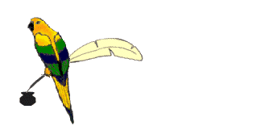
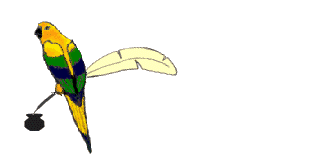

| OTHER BLOGS "CLAIMING" TO
BE THE BOAT LOG OF SAILING FORTUITOUS ARE IMPOSTERS IN DIRECT VIOLATION
OF THE ARTICLES OF
CONFEDERATION AND PERPETUAL UNION. - Aquarius
13:831
|
"Fortuitous" has been a fortuitous name for Fortuitous, which is the name of our boat. We did not name it Fortuitous ourselves, but the name has been fortuitous nonetheless.
for⋅tu⋅i⋅tousUrban Dictionary defines "Fortuitous" as: adj. 1.(not defined)
Many scholars believe that "fortuitous" means 'fortunate' because it sounds like "fortune," and frankly, "who wouldn't like a 'fortune'!"? Of course, the fortune is on the wrong 'foot' in the case. In more "Latin-'ish'" languages, "forte" means chance. Also; by accident.
Thusly, ''''fortuitous'''' means when things happen by chance. It might be a "lucky" chance. It might be "unlucky." The outcome could be good or bad, or somewhere in between. But the foruitous outcome is that it was random and without much (no) planning or particular design of intention. This is why everyone says the word wrong. Kids these days...!
| This site is UNDER CONSTRUCTION | Best Viewed FULL SCREEN screen size | Use Maximize feature for largest Window | Press "Rectangle" button in upper right {Windoze}/green light/button in upper left of Apple computer | hotkey=Alt Space + x to maximize | drag corner of window to make large. | mazimize not necessary in LYNX browser. |
Scientists still do not know exactly how sails work, but that hasn't stopped computers from "crunching the numbers." With today's computer animated drawing (CAD) programs, it is possible to spatially and temporally determine exactly how air and wind interact to propel sailboats and other sailing vessels to tremendous speeds: sometimes in excess of the actual air pressure. While your everyday sailsman can easily pull a few ropes and get a sailboat moving in the direction more or less of his or her choosing (some more than others), the actual process behind the process is even more fascinating than that.
First, it's important to understand the Bernoulli Principal. This theory states that when you blow over a straw, air is consumed, forcing pressure up. Obviously, sails are much larger than simple drinking straws, so imagine, if you will, a cardboard paper towel tube some 30 to 40 feet (98.5253 to 131.234 meters) tall, representing a sail. As air or wind are drawn over the top of the sail, the pressure is forced up, resulting in righting moment that can be converted into transactional lift via the keel. Let's ignore the keel for a moment (we can discuss hydrophylic attraction at a later time) and focus entirely on this paper towel tube. Don't believe me? Try this for yourself: Get a paper towel tube 30 to 40 feet (98.5253 to 131.234 meters) tall and blow across the top of it. The tones that you'll hear (not unlike when your father used to carefully blow across the top of a beer bottle, proclaim "Watch out, tug boat coming through," and then flatulate loudly) will be in the sub-liminal range, around <10Hz. The pressure will be moving at such a rate that it overcomes in the initial stability of the system, which could (back to keels again!) be converted into forward lift, moving a boat like a snake in a puddle.